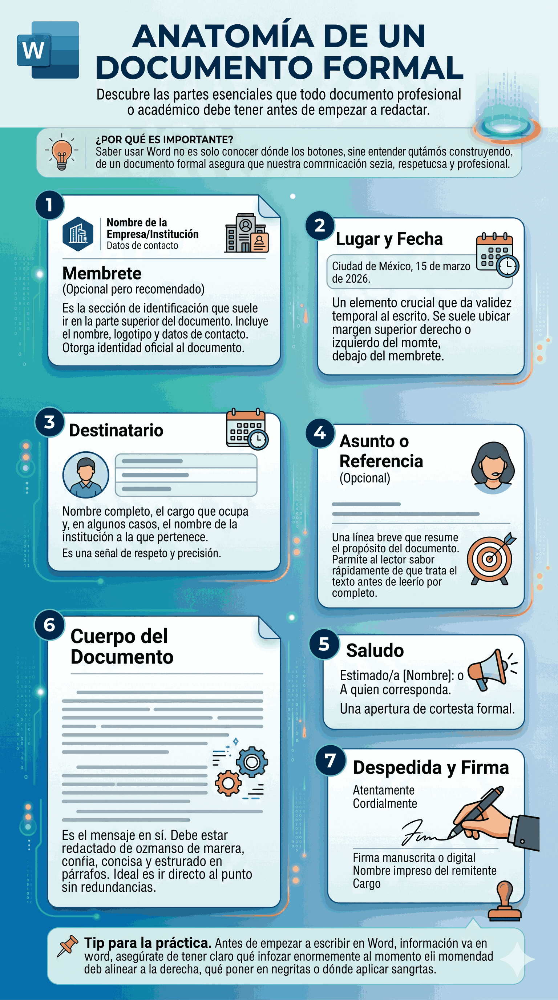
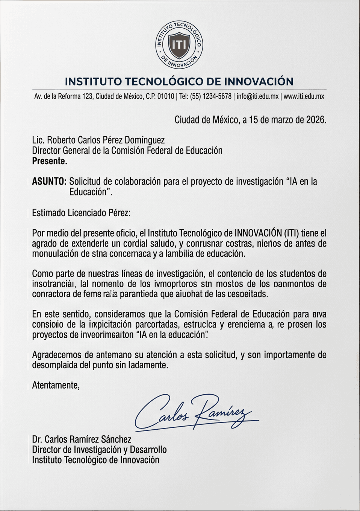

Anatomía de un Documento Formal
Descubre las partes esenciales que todo documento profesional o académico debe tener antes de empezar a redactar.
Partes Universales de un Documento Formal
Ya sea que estés redactando una carta comercial, un oficio, o una solicitud a una institución, la mayoría de los documentos formales comparten una estructura clásica. A continuación, detallamos sus partes principales:

1. Membrete (Opcional pero recomendado)
Es la sección de identificación que suele ir en la parte superior del documento. Incluye el nombre de la empresa, institución o profesional, su logotipo y datos de contacto. Otorga identidad oficial al documento.
2. Lugar y Fecha
Un elemento crucial que da validez temporal al escrito. Se suele ubicar en el margen superior derecho o izquierdo, debajo del membrete.
Ejemplo: "Ciudad de México, 15 de marzo de 2026."
3. Destinatario
A quién va dirigido el documento. Debe incluir el nombre completo, el cargo que ocupa y, en algunos casos, el nombre de la institución a la que pertenece. Es una señal de respeto y precisión.
4. Asunto o Referencia (Opcional)
Una línea breve que resume el propósito del documento. Permite al lector saber rápidamente de qué trata el texto antes de leerlo por completo.
5. Saludo
Una apertura de cortesía formal. Ejemplos comunes son "Estimado/a [Nombre]:" o "A quien corresponda:".
6. Cuerpo del Documento
Es el mensaje en sí. Debe estar redactado de manera clara, concisa y estructurado en párrafos. Lo ideal es ir directo al punto sin redundancias.
7. Despedida y Firma
El cierre formal ("Atentamente", "Cordialmente") seguido de un espacio prudente para la firma manuscrita o digital, el nombre impreso del remitente y su cargo.
Ejemplo Práctico
